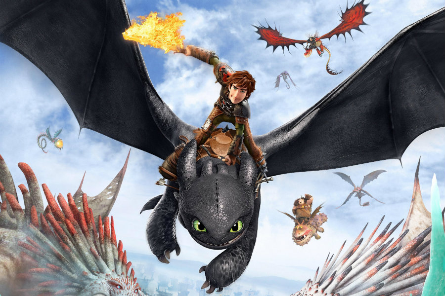

Ejderhanı Nasıl Eğitirsin
Ejderhanı Nasıl Eğitirsin, aynı adı taşıyan 2003'te yayınlanan kitabından DreamWorks Animation tarafından uyarlanan 2010 yılı 3D animasyon fantastik film. Filmde seslendirme yapan bazı isimler Jay Baruchel, Gerard Butler, Craig Ferguson, America Ferrera, Jonah Hill, T.J. Miller, Kristen Wiig, Christopher Mintz-Plasse ve David Tennant.
Hikâye, Hiccup adlı genç bir Viking'in efsanevi Viking dünyasında kabilesinin ejderha avcısı olma geleneğine uyma çabasının yer aldığı bir hikâye anlatılmaktadır.
Film olumlu eleştiriler ile beraber 26 Mart 2010 vizyona girdi. Film dünya çapında yaklaşık 500 milyon dolar hasılat elde ederek Amerika Birleşik Devletleri ve Kanada'da DreamWorks Animation şirketinin en başarılı beşinci filmi oldu.